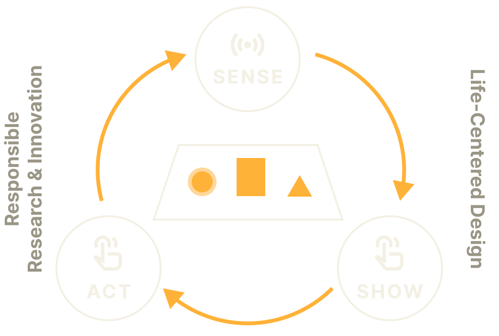
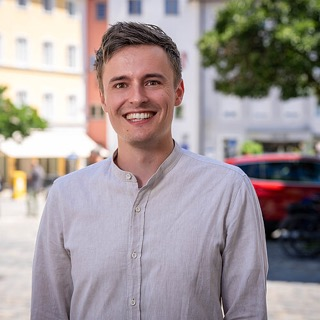
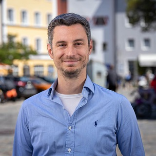
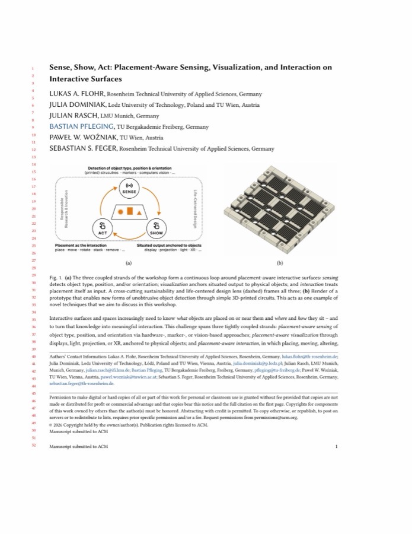

Category A
Position papers
2–4 pages, excl. references · single-column ACM format
ACM ISS 2026 · Half‑Day Workshop
Placement-Aware Sensing, Visualization, and Interaction on Interactive Surfaces
ACM Interactive Surfaces and Spaces (ISS) 2026 · Nov 22, 2026 · Turin, Italy
About the workshop
Interactive surfaces and spaces increasingly need to know what objects are placed on or near them and where and how they sit – and to turn that knowledge into meaningful interaction. This challenge spans three tightly coupled strands: placement-aware sensing of object type, position, and orientation via hardware-, marker-, or vision-based approaches; placement-aware visualization through displays, light, projection, or XR, anchored to physical objects; and placement-aware interaction, in which placing, moving, altering, and removing objects are deliberate activities. Choices in any one strand constrain the other two.

This half-day workshop brings together researchers and practitioners across all three strands to jointly map the design space of placement-aware interactive surfaces and to explore novel techniques. Through position papers, hands-on demos, and structured ideation combining insight harvesting/combination with design studio techniques under lifecycle constraints, participants will develop application concepts, identify open challenges, and initiate collaborations toward a shared research agenda, published proceedings, novel methods, and cross-community follow-up projects.
Exemplary Domains
Call for Participation
We invite (a) position papers and (b) short technical or work-in-progress papers, or (c) demo abstracts of 1-4 pages, encouraging participants to bring prototypes, printed objects, sensing rigs, or visualization demos.
Submissions should address at least one focus area – placement-aware sensing, visualization, or interaction, including XR scenarios in which physical placement shapes augmented, mixed, or virtual experiences – and are encouraged to reflect on lifecycle, sustainability, or more-than-human implications.
At least one author of each accepted submission must register for the conference and attend the workshop. We aim to gather about 15 – 20 participants from diverse areas.
Category A
2–4 pages, excl. references · single-column ACM format
Category B
2–4 pages, excl. references · single-column ACM format
Category C
1–2 pages · bring prototypes, sensing rigs, or visualization demos
How to submit
Email your PDF submission to:
Important Dates
Half-day, in-person workshop with about 15 – 20 participants
Short talks & demos lay the foundation for a structured ideation process
Held on Nov 22, 2026 – the day before the main ACM ISS 2026 conference
Workshop Day
A half-day program: short talks and demos feed a structured ideation process, from individual sketching to a shared research agenda. Subject to change.
Organizers

Lukas A. Flohr
Professor of Interactive Media Production at TH Rosenheim, Germany
Julia Dominiak
Assistant Professor at Lodz University of Technology, Poland & NAWA Bekker Programme fellow at TU Wien, Austria
Julian Rasch
Researcher and PhD Student at the Media Informatics Group at LMU Munich, Germany
Bastian Pfleging
Professor for Ubiquitous Computing and Smart Systems at TU Bergakademie Freiberg, Germany
Paweł W. Woźniak
Professor for Human-Computer Interaction and Head of a research unit at TU Wien, Austria

Sebastian S. Feger
Professor and Director of the study program Smart Interactive Media at TH Rosenheim, Germany
Read More
This workshop's ACM ISS 2026 proposal as a PDF.

Sense, Show, Act — Workshop Proposal Open the full PDF →